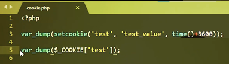
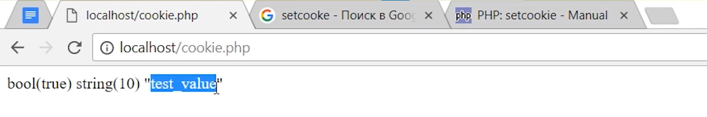
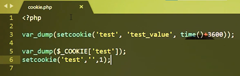
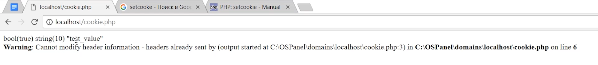
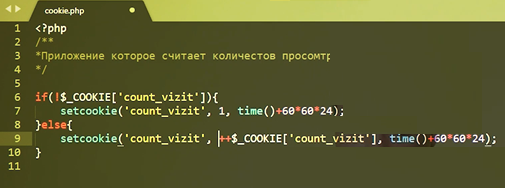
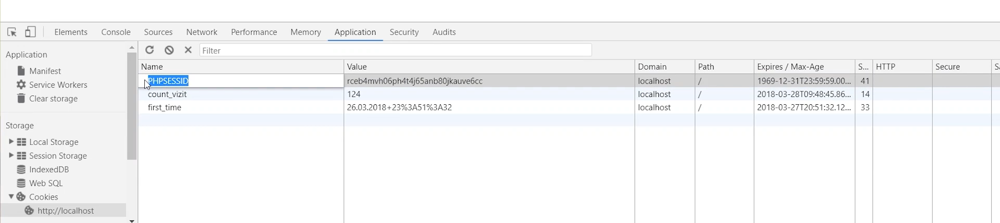
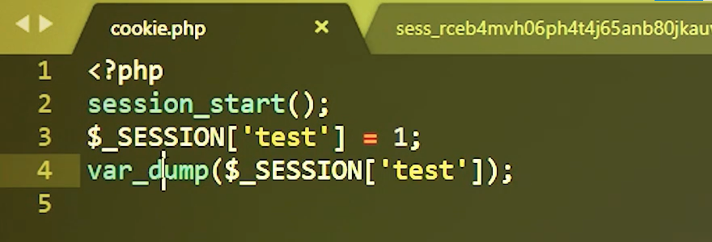
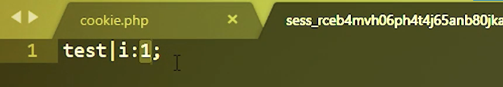
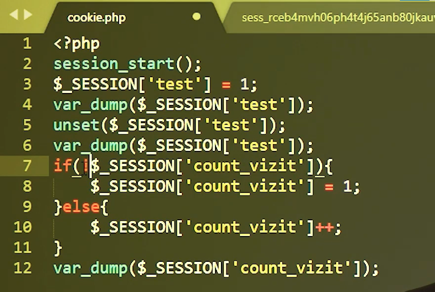

5.1 Куки
На этом модуле мы рассмотрим, что такое сессия и что такое cookie; какие между ними отличия, для чего они существуют, когда нужно использовать сессии, когда нужно использовать cookie и какие проблемы могут возникнуть при их использовании.
Начнем модуль с изучения cookie (Куки). Мы уже на одном из модулей рассказывали, что клиент, веб–браузер передает какие–то данные серверу. Сервер их обрабатывает и отдает обратно. Но представьте себе, что нам нужно определить, какой именно клиент и что нам передал. То есть мы, по сути, хотим идентифицировать того или иного клиента, который сделал какой–то запрос на веб–сервер и уже специально для него персонализированную информацию отправить обратно клиенту, чтобы он мог знать, что веб–сервер его понял, что он его узнал и получить соответственно более релевантную информация. Для этих вещей придуман Куки.
Куки – это небольшой фрагмент данных, который хранится на стороне клиента. То есть фактически записан на компьютере пользователя в веб–браузере. Куки могут содержать абсолютно любую информацию. Эта информация зависит от того, какую логику на стороне веб–сервиса вы будете потом применять. Самым главным механизмом, где применяется Куки, – это авторизация. Все мы знаем, что, заходя на сайт, введя свой логин и пароль, мы попадаем на сайт. Если мы один раз проделали такую информацию через браузер, мы можем закрыть вкладку, открыть ее снова и мы снова будем залогинены – за это и отвечает Куки.
Еще одному механизму, которому нужен Куки, является статистика. Статистикам, будь это Google–статистика, статистика Яндекса или какая–то своя статистика, очень необходим Куки. Эти Куки, распространяемые на домены, потом получает статистика на других сайтах и может ими оперировать в своих аналитических выкладках. Также не стоит забывать о том, что Куки – это абсолютно любые данные, которые вам могут потребоваться на стороне веб–сервера.
В Куки могут храниться предпочтения пользователя или какие–то индивидуальные настройки. Например, вы часто ходите по сайтам и видите такую вещь, что тот или иной сайт предлагает вам выбрать город, в котором вы находитесь. Он его как–то автоматически определяет и спрашивает: вы находитесь, например, в Москве – да или нет? Если вы говорите: "Да", эта информация запоминается и в дальнейшем вы уже не указываете, что вы находитесь в Москве. Ваш браузер запомнил эту информацию и потом каждый раз при запросе к сервису передает эту информацию, и сервер уже автоматически знает, что вы находитесь в Москве. Итак, надеюсь вы поняли для чего нужны Куки.
Куки – это уникальная информация конкретного пользователя, хранимая у него. Давайте посмотрим, как работать с этими Куки.
Можно устанавливать, как через Java Script (это клиентский язык программирования, и он может в браузер сохранить какую–то информацию) либо через PHP с помощью специальных команд. Давайте эти команды и рассмотрим.
Самая главная функция для работы с Куки это setcookie. Setcookie задает Куки, которые будут переданы клиенту вместе с другими HTTP заголовками. Он принимает следующие аргументы, которые нам будет необходимо использовать в дальнейшем.
Это name – название Куки.
Value – это то значение Куки, которое вы передаете.
Expire – это время жизни Куки, которые мы передали клиенту. Это очень важный параметр и за ним необходимо следить. Если мы поставим слишком маленькое значение и наш Куки "протухнет" раньше, чем мы будем его использовать, то тогда мы не получим какую–то уникальную информацию от пользователя. Если, наоборот, слишком долго то мы рискуем, наоборот, получать слишком часто эту информацию, которая может уже устареть.
Еще два параметра, которые нам будут необходимы, это path – путь к директории на сервис, которые будут доступны Куки. То есть вы можете разрешить читать куски только из определенного места на сайте.
Также для этого существует следующий аргумент – domain. Это домен, по которому доступны Куки. Вы можете определить для родительского домена или для всех поддоменов внутри этого домена.
Это не все аргументы данной функции. Остальные мы пока не будем рассматривать; они для начала не важны. Функция возвращает булево значение либо true, либо false. Если true, значит мы точно знаем, что Куки отправились к клиенту и сохранились.
Давайте попробуем использовать эту функцию. Установим любой Куки, назовем его test. Присвоим ему значение test_value. И скажем, что этот Куки будет существовать, например, час. Здесь очень важно заметить, что здесь нужно третьим аргументом передать метку времени. То есть time() + 3600 секунд, что является эквивалентно часу.
Выведем результат выполнения этой функции. Сохраняем. Давайте посмотрим, что у нас получится. Мы видим, что результат выполнения bool(true). И давайте теперь найдем, где этот Куки существует. Для этого мы можем зайти в консоль разработчика, зайти во вкладку Application. Итак, мы установили первый наш Куки.

Давайте его теперь получим от клиента и посмотрим, как им можно воспользоваться. Воспользуемся специально суперглобальным массивом COOKIE. Мы установили Куки с названием test. Попробуем его получить. Видим, что выведено значение string "test_value". То есть мы сейчас получили наше значение, которое ранее сохранили.

Чтобы удалить Куки, достаточно передать setcookie какое–нибудь неправильное значение времени. То есть меньше текущего значения. Дальше нужно поставить какое–нибудь абсолютно любое значение. Главное не ноль. Если мы установим в этот аргумент ноль, тогда Куки будет считать, что он должен жить до конца сессии, то есть до того момента, как мы закроем браузер.

Давайте проверим, как это работает. Видим, что возникла ошибка. Об этой ошибке я вам тоже хотел рассказать.

Это очень частая ошибка, которая возникает при работе с Куки. Она говорит о том, что мы передаем заголовок после того, как на экране уже что–то выведено. До того, как отправились заголовки, нельзя ничего вводить, потому что до отправки заголовков не может быть отправлено тело запроса. Тело запроса может быть отправлено только после заголовках. Куки отправляется в заголовках. Поэтому мы здесь совершили ошибку.
Мы научились как создавать Куки и отправлять ее клиенту, как этот Куки получить и как его удалять.
Давайте создадим наше первое приложение с использованием Куки. В качестве приложения предлагаю использовать обычный счетчик количества посещений нашей страницы. Пишем название. Далее нам необходимо начать уже работать с Куки. Но, так как мы знаем, что при первом входе еще никакие Куки не установлены, нам нужно установить первый Куки. Для этого надо проверить, у нас Куки установлен или нет. Установим его. Присвоим ему значение 1 и скажем, что он может закончить свое существование за сутки. Итак, мы установили наш Куки. Мы один раз зашли и узнали, что сейчас мы просмотрели эту страницу один раз. Если мы сейчас еще раз зайдем, она никак не изменится. Соответственно, нужно продолжить этот счетчик. Если у нас уже Куки установлен, тогда мы будем устанавливать и изменять предыдущее значение. Сделаем увеличение этого значения на единицу. Сохраним. Обновим и посмотрим. Наш счетчик движется. Тем самым, у нас каждое предыдущее значение увеличивается на единицу.

Давайте теперь выведем это значение на экран. Итак, мы сейчас установили при каждом новом заходе увеличение нашего показателя на единицу. Обычной функцией echo выведем это значение. Но на самом деле мы сейчас вот этим методом сделали инкрементальное увеличение до того, как сам Куки нам передался. На самом деле мы немножечко предвосхитили следующую проблему, которая возникает при работе с Куки. Давай перепишем это значение. Если наш Куки существует, создадим переменную counter. В нее поместим +1. Этот counter мы будем передавать Куки, но при этом мы выведем наш Куки, который хранится в глобальном массиве Куки. Смотрите, какая интересная вещь: count_vizit в браузере – "11", а мы видим, что она в нашем браузере отображается как 10. При следующем hit(хите) будет то же самое. Кстати, hit – это каждый запрос к странице. Каждое обновления нашей страницы – это отдельный hit.
На каждом хите у нас count_vizit увеличивается в браузере, а на сервере – еще нет. Почему это происходит? Потому что мы в заголовке только что отправили это значение клиенту. Клиент у себя внутри обновил этот счетчик, а браузеру это значение еще не передавалось. Только при следующем хите это значение, которое у нас здесь есть, отправится обратно на сервер и тогда PHP его увидит, как сейчас происходит в нашем случае. Будьте с этим аккуратнее! Если вы установили какое–то значение, вы должны знать, что вы должны взять именно это значение, либо как в прошлый раз мы увеличили counter, увеличили наш Куки. Тем самым мы уже в этот Куки поместили нужное значение. Либо вы можете вывести переменную counter. Таким образом мы сравняли наши значения.
Куки очень хороши тем, что они хранятся на стороне клиента и хранят какую–то персональную информацию. Но и в этом их главный недостаток – они хранятся у клиента. То есть можно подсунуть абсолютно любые данные. Или, наоборот, взять эти данные и использовать где–то еще. В этом есть их самый главный недостаток. Как с ним бороться мы узнаем дальше, когда поговорим о сессиях.
5.2 Сессии.
Что же такое сессия? Сессия, очень похожа на куки, – это некое хранилище, некий механизм хранилища. Но только это хранилище расположено не у клиента, как в случае с куки, а на сервере. Именно это делает их защищенными. Нельзя просто так взять и получить данные с сервера в отличие от данных, которые находятся у клиента. Тем не менее, сессии и куки должны работать вместе, потому что они отвечают за главную задачу – авторизацию пользователя и продление его сессии.
Как нам определить, когда нужно данные хранить в куки, а когда в сессиях? В сессиях мы рекомендуем хранить информацию, которая относится к персональным данным, которые еще не были сохранены в базу данных, потому что сессия имеет ограниченный срок жизни.
Также в сессии можно положить любые данные, которые можно потом передавать как глобальную переменную между составными частями нашего сайта. В куки же необходимо класть информацию, которая относится непосредственно к пользователю и которую можно дать прочитать любому человеку в открытом виде.
Если же вы храните какую–то информацию в куки, которую нельзя прочитать в открытом виде, но вам все равно необходимо ее хранить в куки потому, что это является частью персональной информации, которая потом должна поступить на сервер и такой информацией, например, является идентификатор сессии, то ее необходимо хранить хотя бы в зашифрованном виде, в виде хэша.
PHP за нас уже делает необходимый хэш сессии и отправляет к куки. Для этого нужно воспользоваться всего лишь одной командой. Воспользуемся функцией session_start. Это функция без аргументов, которая стартует в данный момент, когда интерпретатор попадет на эту строчку. Очень важно – session_start тоже должна передаваться до того, как передается какое–либо тело ответа. Давайте посмотрим, как это происходит. Сохраняем. Мы ничего не увидели, но, тем не менее, у нас появился куки. Называется она "PHPSESSID" и получилась какое–то значение.
Это значение уже и есть хэш – значение нашего куки, которое установил сам PHP за нас. Почему именно хэш? Потому что его практически невозможно подобрать. Он генерируется на уникальных, независящих ни от чего, данных. И он шифруется и сохраняется в таком виде в браузере.

Но вы спросите, почему наш куки создалась таким непонятным именем и на такое непонятное время? Чтобы это понять, давайте посмотрим настройки нашего PHP. Именно оттуда и берутся значения по умолчанию. Давайте посмотрим.
Есть функция phpinfo. Она показывает всю информацию, которая установлена сейчас в PHP. Начинается все с того, что показывается текущая версия PHP. Тут огромное количество данных, которые предустановлены или настроены заранее. Нас интересуют настройки сессии. Их огромное количество. Все их знать необязательно, но знать основные нужно, в том числе и PHPSESSID. Session.name – настройка PHP – говорит о том, какое значение переменной куки будет установлено в браузер. Дальше.
Еще очень важный параметр – это session.save_path – тот путь, по которому сохраняются все наши сессии. Мы уже говорили о том, что сессия хранится на сервере в виде файла, по умолчанию. Также есть возможность установить сессию не в файл, а, например, в кэш или в базу данных. Но об этом мы сейчас говорить не будем.
Еще очень важным параметром является параметр session.auto_start. Он установлен на "off". То есть при каждом заходе на страницу, на которой нет session.auto_start, сессия не будет стартовать. Если ставить этот параметр в "on", то на какую бы странице мы не зашли, сессия автоматически будет стартовать.
Также еще важный параметр куки – это session.cookie_lifetime. Он сейчас установлен в "0". Это значит, что куки будет храниться ровно то время, покуда действует сессия. Устанавливается он в соответствующем виде какой вы уже видели на этом, наверное, основных параметров все.
Давайте посмотрим на наш файл изнутри, как он выглядит. Видим, что сейчас он пустой, там нет никаких значений. Добавим туда значения. Для того, чтобы изменить или добавить какое–то значение в сессии, необходимо воспользоваться суперглобальным массивом SESSION. В этом массиве хранятся все значения, которые туда помещены. Для начала отправим туда "test". Мы его туда поместим и сразу прочитаем. Только для начала нужно "стартануть" сессию, потому что она здесь не стартует автоматически.

Сохраняем, смотрим, что получится. Итак, мы вывели текущее значение переменной "test". Соответственно, она равняется единице. Давайте теперь проверим, как она хранится на сервере. Здесь есть значение test, i:1. Это данные, которые хранятся в нашей сессии. Они потом автоматически преобразуется в наш массив.

Итак, вернемся к коду. Это значение можно естественно переопределить в любой момент времени, и эта сессия лишена того недостатка, что нужно ждать обратного хита чтобы получить текущее значение куки. Сессия при изменении сразу автоматически будет доступна в любом месте кода, который идет ниже, после этого определения. Чтобы удалить это значение можно воспользоваться уже знакомой нам функцией unset.
Давайте теперь тот код, который мы писали для куки, перепишем на сессию. Что будет, если мы сделаем наш counter – счетчик посещений – сессией. Все. Итак, зашли один раз; два, три, четыре, пять и так далее. И это значение хранится у нас в нашем файле.

Опять же, если нам нужно удалить нашу сессию, а именно значение counter_vizit, тогда надо сделать unset этой перемены. Также мы можем получить с помощью суперглобального массива все значения, которые хранятся в сессии. Сейчас это у нас только одно значение. Давайте поместим туда еще несколько значений и посмотрим, как это можно вывести и получить. Сохраним, обновим страницу, видим все значения, которые у нас сейчас хранятся в нашем суперглобальном массиве, то есть нашей сессии.
Но здесь есть одна проблема. Когда мы подсчитывали наше значение count–vizit, мы забыли сказать об одной очень важной вещи. В куки мы могли посчитать это значение за сутки, но в сессии у нас автоматически установилось время жизни до конца жизни куки. Куки исчезнут, когда мы закроем наш браузер, тем самым исчезнет наша сессия и, соответственно, все внутренние значения сотрутся. Чтобы этого не допустить, необходимо установить нужное вам время жизни сессии. Но как раз сессия лишена того недостатка, когда мы можем переопределить это значение, имея лишь только в руках браузер; мы можем его изменить в файле, упомянутом выше, поставить какое–то ручное значение.
Но это может сделать только администратор системы и не может сделать рядовой пользователь. Соответственно, сессию никак не может изменить пользователь, только если это не предусмотрено логикой нашей программы.
Итак, мы научились, как стартовать сессии, как добавлять туда какие–то значения, изменять значения, удалять значения. Давайте теперь уничтожим нашу сессию. Для уничтожения сессии используется специальная функция session_destroy. Сохраним, запустим, посмотрим, что произойдет. Мы все еще видим наши значения. Но теперь, если мы вернемся в нашу файловую систему, мы уже не увидим нашу сессию. Но это не полное удаление сессии. Для того чтобы полностью удалить сессию, необходимо также удалить куки. Также и не очиститься суперглобальный массив SESSION – он останется жить. То есть уничтожение сессии не уничтожает куки и не уничтожает текущие значения суперглобального массива. Для того чтобы полностью очистить сессию, необходимо также удалить куки и очистить суперглобальный массив.
На этом наш раздел завершен. Сегодня мы узнали, что такое куки, что такое сессия. Рассмотрели, как с ними работать. Узнали, какие они имеют недостатки, в чем их различие и в чем они необходимы в повседневной жизни.